La mejor gestión de tu Android posible desde tu ordenador con AirDroid
Sun, 27 Nov 2011 09:50:35 PST
Tener tu Android gestionado desde tu PC o Mac de la manera más sencilla posible es uno de los mayores quebraderos de cabeza para un usuario de a pie, tener algo así como lo que tienen los Samsung con Kies, los HTC o incluso los iPhone con iTunes pero además que funcione bien y no [...]
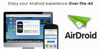
Tener tu Android gestionado desde tu PC o Mac de la manera más sencilla posible es uno de los mayores quebraderos de cabeza para un usuario de a pie, tener algo así como lo que tienen los Samsung con Kies, los HTC o incluso los iPhone con iTunes pero además que funcione bien y no sea tan restrictivo como estos…
La solución está aquí, con AirDroid. Y lo mejor, sin necesidad de cables.
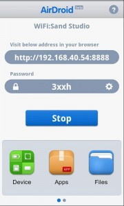AirDroid además de sencillo es efectivo a más no poder, y el hecho de que no necesitemos cables hace que podamos hacerlo desde cualquier lugar prácticamente, siempre que tengamos la necesidad.
Lo cierto es que las alternativas de acción que nos permite son muchísimas. Desde gestión del teléfono en sí, con llamadas y SMS (e incluso poder enviarlos y recibirlos), la gestión de lo multimedia y de todo contenido que tengamos guardado en nuestra SD, gestión de aplicaciones…
Empecemos por lo primero, por conectarlo, tan sólo tendremos que estar en la misma red WiFi que el ordenador desde el que queremos gestionar nuestro Android. Entrar en la aplicación desde el teléfono y darle a Start. Tan fácil como eso. Ya está.
Ahora sólo tendremos que abrir una nueva pestaña en nuestro navegador favorito, escribir la URL que nos dice que visitemos e introducir una vez ahí la contraseña autogenerada que pone en la pantalla. Con eso ya estarán conectados. Además, he de decir, que la app en sí, es un gestor de archivos y de memoria, desde ella podremos eliminar, editar, renombrar, mover… cualquier archivo que esté en nuestra SD, así como liberar memoria.
Lo mejor de todo en mi opinión es la gestión de aplicaciones. Podrás desinstalar cualquier aplicación (siempre que no sea de sistema, que os veo venir), así como instalar otras. ¿Instalar? Sí, bien desde el Market, ya que tiene un iconito que te lleva al Market, pero no es más que un enlace de nueva pestaña a la versión web del Market, pero es que también es un instalador de APK, por lo que si tienes una apk de una antigua aplicación, o una que está probando un amigo tuyo que es desarrollador o lo que quieras, pues la puedes instalar en un abrir y cerrar de ojos. La leche.
Pero es que también puedes exportar cualquier aplicación que tengas instalada como APK en un abrir y cerrar de ojos, nunca ha sido tan sencillo como esto, eliges la aplicación, le das a exportar y ya la tienes en APK. Muy muy cómodo.
La interfaz de AirDroid es muy del tipo de un sistema operativo de ordenador cualquiera, de fácil entendimiento (cualquier persona que haya tocado Windows o Mac OS lo entiende a la primera).
La importación y exportación de archivos es tan sencilla como en el caso de los APK, y se te hará tremendamente sencillo el traspaso de un lado a otro de archivos tales como imágenes, canciones, documentos… Hablando de archivos multimedia, incluye en sí un reproductor de música y un visor de imágenes, para poder escuchar tus canciones desde el ordenador o editar tus imágenes (girarlas por ejemplo) sin necesidad de nada más.
Con AirDroid tenemos la gestión total de nuestro teléfono desde el ordenador sin necesidad de cables y de la forma más sencilla posible, ¿te lo vas a perder? Para que entiendas aún mejor sus características, aquí te dejamos un vídeo en el que podrás ver todo lo que es capaz de hacer:
En el Market | AirDroid (Gratis)
Ya estás tardando en darle una prueba y comentarnos si te convence esta alternativa perfecta para gestionar tu querido Android.
Seguramente también te interesará...
- Filtradas las actualizaciones de la cámara, el reloj, el reproductor de música y la galería 3D de Android
- Recupera datos perdidos de tu Android con Undelete (Sólo root)
- Cotton Candy: un PC dual-core con Android dentro de un USB
- Actualizaciones del Samsung Galaxy S II
- Cómo usar WhatsApp desde el PC: Tutorial completo paso a paso
- Comparte, aloja, edita y consigue 10GB en la nube con Minus, el auténtico rival de Dropbox
- Controla tus gastos al céntimo con MoneySaver
- Multiple APK o cómo la fragmentación podría tener los días contados
Motorola Razr lanzado como un proyectil: Vídeo promocional
Sun, 27 Nov 2011 04:23:41 PST
Hay vídeo promocionales y vídeos, y Motorola suele aplicarse en ese campo haciendo cosas espectaculares, y con el Motorola Razr lo ha vuelto a conseguir, y no es para menos, es su lanzamiento estrella de todo el año, porque aunque haya habido buenos smartphones en su catálogo estos meses, o bien eran reediciones de antiguos [...]
Hay vídeo promocionales y vídeos, y Motorola suele aplicarse en ese campo haciendo cosas espectaculares, y con el Motorola Razr lo ha vuelto a conseguir, y no es para menos, es su lanzamiento estrella de todo el año, porque aunque haya habido buenos smartphones en su catálogo estos meses, o bien eran reediciones de antiguos éxitos o simplemente no eran o pertenecian a la gama alta, por no hablar de que es de los primeros en salir tras la noticia de la adquisición de Google, y la parte obvia, y es que sus características son impresionantes, te puede gustar o no, pero es impresionante.
Pero vamos a lo interesante, el vídeo donde los locos de Motorola lanzan un Razr como si fuera un proyectil contra un huevo y una tarta….con lo que nos hubiéramos divertido si hubiera sido una manzana y una tarta de moras, y de poste, un mango. Los resultados son devastadores. Os dejo verlo y os aviso que en breve tendremos un Razr en nuestras manos….. quizá no para hacerle estas cosas pero si para una reseña, y ver si los antiguos fantasmas de Motorola siguen o han desaparecido.
Seguramente también te interesará...
- Espectaculares vídeos del Motorola Razr y HTC Rezound
- Ya hay precios para Motorola RAZR y Galaxy Nexus libres
- Videos promocionales y videoreview del Motorola Razr – Nos tiene enamorados :D
- Galaxy Nexus en Vodafone y Motorola Razr en Movistar ¿Con cual te quedas?
Juegos Android de la Semana: Aviones de papel, videojuegos retro y puzzles
Sat, 26 Nov 2011 10:15:37 PST
Buenas a todas, y bienvenidos a un artículo más de Juegos de la Semana, un artículo que hacemos semana a semana para traeros e informaros de los mejores juegos que rondan el Android Market: los que están dando el pelotazo, además de los más entretenidos, por supuesto. Ahora vienen las fiestas por navidad, y tenemos bastante tiempo [...]
Buenas a todas, y bienvenidos a un artículo más de Juegos de la Semana, un artículo que hacemos semana a semana para traeros e informaros de los mejores juegos que rondan el Android Market: los que están dando el pelotazo, además de los más entretenidos, por supuesto.
Ahora vienen las fiestas por navidad, y tenemos bastante tiempo para nosotros. ¿Y que mejor que pasarlo con nuestro Android y unos cuantos juegos para divertirnos un largo rato?
Y claro, para eso tenemos que tener algunos juegos, ¿no? Los de hoy van sobre aviones de papel, un poco de retro y unos puzzles para no perder mente…
¿Te ha gustado algo de esto? Sigue Leyendo…
El primer juego es Tap Tap Glider, un juego en el que tenemos que volar todo lo que podamos, sin chocarnos con nada… ¿Serás capar de ser el mejor?

En el juego tenemos que llegar con nuestro avión de papel todo lo lejos que podamos hacerlo: esquivando todos los obstáculos que podamos para seguir volando sin problemas. Con tres niveles de dificultad diferentes, y tres tipos de aviones, los controles son sencillos e intuitivos.
El juego está disponible en el Android Market sin coste alguno:

El segundo juego es TimeChaos, un pequeño regreso a los videojuegos de antes. Solo para nostálgicos. oiga…
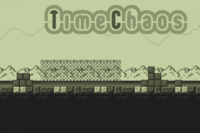
El juego consiste en eliminar a todos los enemigos que nos vengan, para avanzar al siguiente nivel. Con solo cuatro colores, nos trae buenos recuerdos de la época de la Game Boy. Los desarrolladores tienen intención de integrar OpenFenit, modo con 16 colores y mucho más en la siguiente actualización.
El juego, desarrollado por OrangePixel, está disponible gratis en el Android Market:
El tercer y último juego es iBlast Moki, un juego que pondrá a prueba tu cabeza. ¿Serás capaz de demostrar que eres mas inteligente que ella?
Este juego, que ya ha pasado por la plataforma iOS ganando diversos premios y recogiendo buenas opiniones de la crítica especializada, ha llegado a Android: en el tenemos que resolver diferentes puzzles con diferentes recursos, como bombas. Con 85 niveles diferentes en 7 mundos diferentes, incluye unos gráficos bastante depurados. Tiene integración con OpenFenit, también puedes crear tus propios mundos y compartirlos con todo el mundo, además de jugar en mundos creados por otras personas. Puedes manipular diferentes objetos, e incluye físicas bastante realistas…
El juego está disponible en el Android Market al precio de 2,19€
Y con esto vamos a terminar. Si te han gustado, puedes comentarlo en los comentarios o compartir el artículo con quien quiera, por supuesto. Y si crees que un juego merece aparecer aquí, puedes decirlo en los comentarios o en nuestra sección de Contacto… ¡Hasta Luego!
Seguramente también te interesará...
- Juegos Android de la Semana: Coches en realidad aumentada, Tiny Tower y conejitos…
- Juegos Android de la Semana: Golf, disparos y un poco de fuego
- Juegos Android de la Semana: Tiro al zombie, aviones y aliens
- Juegos Android de la Semana: Aviones, Monster Trucks y Robots para hoy.
- Juegos de la Semana: Hoy con policía, superdeportivos y pájaros asustados
- Juegos Android de la Semana, hoy con aviones, batallas y gansters
- Juegos Android de la Semana: Air Penguin, Los pitufos y Great Little War
- Juegos Android de la Semana, ¡hoy os traemos un Top 4 de imprescindibles!
Cómo hacer que el sistema de notificaciones push de Facebook para Android funcione correctamente
Sat, 26 Nov 2011 00:13:07 PST
Hoy os quiero trasladar una solución que he leído en una web sobre un eterno problema en Android: las notificaciones de Facebook. Como bien sabréis, las notificaciones push de Android van bien en general: gMail, Twitter, gTalk, Whatsapp, etc… y por una razón raruna, nunca ha funcionado correctamente con la aplicación de Facebook. Pues bien, [...]

Hoy os quiero trasladar una solución que he leído en una web sobre un eterno problema en Android: las notificaciones de Facebook. Como bien sabréis, las notificaciones push de Android van bien en general: gMail, Twitter, gTalk, Whatsapp, etc… y por una razón raruna, nunca ha funcionado correctamente con la aplicación de Facebook.
Pues bien, os traemos 2 maneras de solucionar dicho problema, una más sencilla que la otra. Seguid leyendo para descubrirlas.
Pequeña introducción
Por descontado, esta solución no la hemos encontrado nosotros. Todo el mérito es del usuario de Android central, ccw1134, que descubrió la solución, y al post de androidnz que explica como solucionarlo. Básicamente, ccw1134 se hartó de que a su hija con Blackberry le funcionara perfectamente y a él no y miró en los permisos de aplicaciones de Facebook (en Facebook.com -> Ajustes de cuenta -> Aplicaciones) tanto de él como los de su hija. Resultó ser que eran exactamente iguales excepto por un único detalle, el de su hija tenía un permiso adicional: Facebook para Blackberry.
Y como es perfectamente razonable pensó: a lo mejor este permiso es clave para que funcione bien. Y lo divertido de la historia es que efectivamente funciona. Por descontado no es la forma oficial, pero consigue hacer funcionar al completo el sistema de notificaciones de Facebook en Android. Para solucionar dicho problema vamos a tener dos opciones, una fácil y otra más compleja.
Solucionar el sistema de notificaciones push
Forma 1 Con una Blackberry
Resulta tan sencillo como coger, sustraer, tomar prestada o utilizar una Blackberry que tenga BlackberryOS 5.0 o superior. A continuación tan solo utiliza su aplicación de Facebook para conectarte a tu cuenta y concederte los tan ansiados permisos. Fin de la historia.
Forma 2 Con un emulador
Y si no tenemos Blackberry a mano, pues tendremos que tirar de emulador (en Windows of course). Vamos con ello
Requisitos previos
En el Blackberry developers’site necesitarás bajar e instalar en tu PC
- Blackberry Device Simulator 7.0 (177MB) [mirror]
- Blackberry Email and MDS Services Simulator Package (44.2MB) [mirror]
Pasos
- En tu Android, asegúrate de tener la última versión de Facebook. Ve a Ajustes -> Aplicaciones -> Administrar aplicaciones -> Facebook y borrar caché y data.
- En tu PC arranca el emulador Blackberry (Menú -> Todos los programas -> Research In Motion -> Blackberry Simulators). Con el ratón pulsa sobre el pequeño botón blackberry para que aparezcan las aplicaciones
- Abre Facebook e inicia tu sesión (puedes usar el teclado). Espera a que se cargue completamente la aplicación y el contenido.
- Cierra la aplicación y en tu PC entra en Facebook.
- Ve a Ajustes de cuenta -> Aplicaciones y asegúrate de que ‘Facebook for Blackberry Smartphones’ está autorizado. Si no, vuelve a iniciar la sesión desde el emulador otra vez
- Ahora inicia Facebook desde tu Android. Ve a Ajustes y asegúrate de que está seleccionado Notificaciones. Puedes poner el intérvalo de tiempo a nunca ya que son notificaciones push.
- Fin de la historia
Y así, por arte de magia ya tendrás notificaciones push como se merecen en Android. Parece mentira que Facebook siga sin solucionar y mejorar su aplicación para Android, que hoy por hoy es tremendamente deficiente. Animaos a probarlo y nos contáis ;)
Como ya he dicho, todo esto vía AndroidNZ
Seguramente también te interesará...
- Brief me, el lector de noticias y feeds definitivo para Android similar a Flipboard
- Dale vida y un nuevo aspecto a tus notificaciones para Android con Pops
- Publicidad en la barra de notificaciones, una tendencia al alza
- Las notificaciones PUSH llegan a Android con Notifo
- Live Wallpaper: tus notificaciones flotan por tu pantalla con Notification Bubbles
- La novedades de la semana 31 Julio-10 Agosto 09
- Controla todas las notificaciones de tu Android con Missed It!
- No te pierdas ninguna notificación con Popup Notifier para Android
Apps Chorras y Rumores de la Semana #OMGvuelvemecano
Fri, 25 Nov 2011 07:27:45 PST
Pues hola a todos, y sean bienvenidos a uno más, de lo que estabais todos esperando como rabiosos, un artículo más de Aplicaciones Chorra y Rumores de la Semana! Un resumen semanal, patrocinado por nuestros amigos Chorrada y Rumor, que os trae las dos aplicaciones mas estúpidas del momento, además de un par de buenos y bonitos [...]

Pues hola a todos, y sean bienvenidos a uno más, de lo que estabais todos esperando como rabiosos, un artículo más de Aplicaciones Chorra y Rumores de la Semana! Un resumen semanal, patrocinado por nuestros amigos Chorrada y Rumor, que os trae las dos aplicaciones mas estúpidas del momento, además de un par de buenos y bonitos rumores…
Para hoy hamos preparados dos rumores: dos teléfonos, un torpedo y un peso ligero, junto a dos aplicaciones chorras que nunca querrás tener instaladas en tu Android…
¿Te gusta nuestro plan para hoy? Nadie te impide que Sigas Leyendo… ;)
Rumores
Como viene siendo habitual, vamos a dar comienzo con los rumores, todos ellos proporcionados por nuestro proveedor oficial: RumorOficial
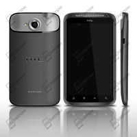
El primero va a ser un verdadero misil traído por nuestros amigos de HTC, con el nombre de Supreme. También conocido como Edge, contará con un procesador de cuatro núcleos a 1,5GHz, una pantalla de 4.7 pulgadas con una resolución de 720p, y vendrá con Android 4.0 Ice Cream Sandwich (Y suponemos que con la última versión de HTC Sense).
Como podéis observar en la imagen filtrada, no da paso a los botones táctiles característicos de Ice Cream Sandwich, ya que integra unos de estilo similar al HTC Sensation, por poner un ejemplo. Se desconoce precio y salida al mercado, así que estaremos atentos ;)
Fuente | RumorOficial
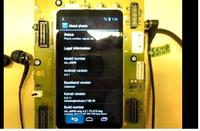El siguiente rumor va sobre Sony Ericsson, en concreto Nypon, su nombre en clave actual. Se podido ver un vídeo de este terminal en la fase de pre-producción corriendo la última versión de Android disponible: 4.1. Con una pantalla qHD de 960×540, podemos ver que, en vez de Snapdragon como procesador se ha preferido usar un conjunto de chips ST-Ericsson dual-NovaTho que da 1GHz con doble núcleo. También incorpora 512MB de RAM, aceleración por hardware y soporte a redes HDSPA.
Por sus características no está destinado a competir en la parte alta de los teléfonos Android. Tampoco se conocen detalles sobre el precio y salida de este terminal…
Fuente | RumorOficial
Aplicaciones Chorra
Pasamos a las aplicaciones chorras, las encontramos mas chorras que hasta las de Telecinco!
La primera aplicación es ¡Pedos Machine!, y lo mejor será que el propio dev os cuente de que va la app…
Con esta aplicación serás capaz de hacer chistes por la generación de sonidos pedo.
Aburrido de ese imposible tostón de clase?
¿Quieres llegar a ser bastante escatológico en plena fiesta?
Prueba esto y luego mira muy de cerca a ese tipo en el ascensor con ojos de sospecha
Con esta colección de sonidos de pedo serás el líder de las bromas en tu pandilla!
La aplicación nos permite hacer el ruido que haría un pedo, pero sin el desagradable gesto de hacerlo en realidad…
Si la quieres, la puedes obtener en el Android Market gratis…
La siguiente aplicación, que es un juego chorra, es Angry Wife, y por increible que parezca, no es una copia de Angry Birds…
En este juego somos la esposa, y hemos pillado al marido haciendo cosas extrañas, así que vamos a reventarle platos en la cabeza!
Tu dosis de violencia diaria está disponible en el Android Market de forma gratuita…
Y con esto y un bizcochito terminamos por hoy. ¡Hasta luego!
Seguramente también te interesará...
- Apps Chorras y Rumores de la Semana #Hoyconracióndoble
- Apps Chorras y rumores de la Semana [#definitivamenteestoesmalo]
- Juegos Android de la Semana: Aviones de papel, videojuegos retro y puzzles
- Apps Chorra y Rumores de la semana #ultramar,ultramar
- Juegos Android de la Semana: Coches en realidad aumentada, Tiny Tower y conejitos…
- Juegos Android de la Semana: Golf, disparos y un poco de fuego
- Juegos Android de la Semana: Tiro al zombie, aviones y aliens
- Juegos Android de la Semana: Aviones, Monster Trucks y Robots para hoy.
El mayor servicio mundial de webcams online con Worldscope Webcams para android
Fri, 25 Nov 2011 01:59:34 PST
Seguro que más de uno habéis probado aplicaciones que os permiten monitorizar webcams públicas, por lo que esta aplicación, de primeras, puede que no os resulte llamativa. Sin embargo, hay ciertos puntos que la convierten en una aplicación algo peculiar, como por ejemplo su equipo de desarrollo, son todos familia (un padre y sus dos [...]
Seguro que más de uno habéis probado aplicaciones que os permiten monitorizar webcams públicas, por lo que esta aplicación, de primeras, puede que no os resulte llamativa.
Sin embargo, hay ciertos puntos que la convierten en una aplicación algo peculiar, como por ejemplo su equipo de desarrollo, son todos familia (un padre y sus dos hijos) o que se desarrolla conjuntamente con webcams.travel y gracias a eso disponemos de más de 16.000 webcams (y en aumento) a nuestro alcance, a las que conectarnos desde la aplicación Worldscope Webcams, de modo que, cada webcam que se agrega a la base de datos de webcams.travel, pasa a estar disponible en la aplicación de inmediato.
El uso de Worldscope Webcams es muy sencillo. Al iniciar la aplicación nos encontramos con una pantalla con 6 sencillos iconos: Buscar en el mapa, cercanas, populares, aleatorias, time-lapse y favoritas.
- La opción de “Buscar en el mapa” nos muestra un mapa del mundo por el que nos podemos desplazar, seleccionar un, país, zona o localidad concreta y que la aplicación nos muestre la ubicación de las webcams sobre el mapa, una lista de las mismas en esa zona, información meteorológica o una lista de hoteles cercanos.
- Haciendo uso de “Cerca” podemos ver las webcams que hay alrededor de la localización de nuestro terminal.
- “Populares“, simplemente nos muestra un listado de las webcams con más visitas del día.
- “Aleatorio“, nos conecta a una de esas más de 16.000 webcams, al azar.
- “Time-Lapse” nos muestra secuencias de vídeo aceleradas de algunas webcams que se han ido recopilando a lo largo del día.
- Y “Favoritos“, sirve para ver las webcams que hemos marcado como favoritos, organizarlas en grupos o incluso para crear un fondo de pantalla animado con ese grupo de webcams.
Obviamente, no podía faltar el aspecto social de la aplicación, que nos permite compartir todo esto a través de nuestros servicios sociales habituales.
Y la mejor parte de todas: ES GRATIS.
Aquí os dejamos un vídeo para que veáis la aplicación en movimiento.
Descarga Worldscope Webcam
Seguramente también te interesará...
- Los mejores vídeos TimeLapse con tu Android y Lapse It
- Fotografía Android: Crea tu propio Time Lapse y StopMotion
Navegación GPS gratuita y sin conexión de datos con Navfree para Android
Thu, 24 Nov 2011 10:59:27 PST
La aplicación nativa de Google Maps Navigation que encontramos en los dispositivos Android está muy bien, y nos puede sacar de un apuro en más de una ocasión. Su principal problema es que para poder funcionar depende de una conexión de datos para cargar los mapas, calcular la ruta, etc. Es cierto que desde las [...]
La aplicación nativa de Google Maps Navigation que encontramos en los dispositivos Android está muy bien, y nos puede sacar de un apuro en más de una ocasión. Su principal problema es que para poder funcionar depende de una conexión de datos para cargar los mapas, calcular la ruta, etc. Es cierto que desde las últimas actualizaciones podemos cargar parte del mapa para guardarlo en la memoria o no depender de esa conexión, pero a fin de cuentas, en un momento u otro sí tendremos que recurrir a ella.
Hay distintas aplicaciones GPS que nos permiten descargar los mapas, y muchas de ellas son de pago, pero siempre podemos encontrar otras alternativas que si lo que nos ofrecen “by the face” nos basta, ¿por qué no usarlas? Ese es el caso de Navfree, un navegador GPS gratuito que a continuación te detallamos.
Navfree, navegación giro a giro gratuita
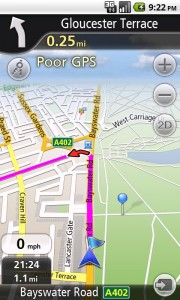Generalmente, diría que casi la totalidad de usuarios de Smartphones disponen de tarifa de datos, por tanto, usar la aplicación de Google Maps no supone un mayor inconveniente. El problema está en si por ejemplo nos vamos de viaje a otro país. Por muy buena tarifa u oferta que te hagan en Roaming, creo que si le vas a dar un uso intensivo al GPS, la factura puede salirte por un pico.
Para casos como estos es muy recomendable disponer de un GPS con los mapas descargados y sin necesidad de tener que conectarnos a Internet para calcular rutas. Navfree es uno de esos GPS. Ya disponible para iOS o Bada, ahora le ha llegado el turno a Android de poder disfrutar de esta aplicación.
Su funcionamiento, como es de suponer, es básicamente el mismo que el de cualquier aplicación de este tipo. Lo que debemos hacer al iniciarla es crear una cuenta en Navmii si lo deseamos, aunque no es obligatorio. Luego debemos seleccionar qué mapas o mapas queremos descargar a nuestro dispositivo, y hay que tener en cuenta que este proceso debe hacerse bajo una red Wifi si no queréis fundiros de un plumazo toda vuestra tarifa 3G.
Los mapas que usa pertenecen a los de Open Street Map, una buena referencia con una gran comunidad de usuarios que van mejorando los mapas poco a poco y que son, dependiendo de la zona, bastante correctos.
En cuanto a su uso, podemos planificar nuestra ruta indicando directamente la dirección, un PDI, o realizar una búsqueda directamente en Google (aquí sí que necesitamos una conexión de datos). Podemos también previsualizar la ruta, buscar rutas alternativas o ver la ruta completa sobre el mapa, por ejemplo. Sus opciones tampoco son pocas: Seleccionar vehículo por defecto (coche, moto, camion…), tipo de ruta (rápida, fácil, corta…), evitar peajes, evitar autopistas, visualización 2D o 3D y un largo etcétera de configuraciones posibles.
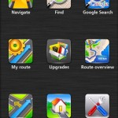

Como vemos, es muy completa y no le falta casi de nada. Puede que los mapas no sean los mejores del mercado, pero no tienen nada que envidiar a los de pago, sinceramente. Y, otra cosa buena, está completamente en Español (exceptuando algún pequeño error de traducción), incluidas las voces, así que es una opción a tener muy en cuenta si no queremos usar Google Mas Navigation como recurso para estas situaciones.
¿Ya lo has probado? Comparte tu opinión con nosotros y los demás usuarios.
Seguramente también te interesará...
- Route 66 Maps + Navigation: una nueva revolución en la navegación de Android
- Ya está disponible Wikitude Drive, un GPS fusionado con realidad aumentada
- Alternativas a Google Maps con MapQuest y Locus
- Garmin Fit presenta su aplicación para el seguimiento de tus entrenamientos
- Cosas que no sabías de Android: Tener el GPS Activado no gasta batería y otras curiosidades
- Qué hacer con un Android viejo: Ideas para reciclarlo y sacarle partido
- Sal de paseo este verano con Ulugh y Collectemals en tu Android
- Especial GPS, radares y navegación en Android
La información más detallada del estado de la batería de nuestro Androide: Battery Monitor Widget
Thu, 24 Nov 2011 06:54:40 PST
Una de las características que a mi parecer le falta a Android es un buen monitor de batería. Ésto no es otra cosa que una buena aplicación que nos da información acerca de cómo, cuándo y por qué nuestro Androide gasta cada 1% de batería. Las explicaciones, por mucho que diga la gente, siempre le [...]
Una de las características que a mi parecer le falta a Android es un buen monitor de batería. Ésto no es otra cosa que una buena aplicación que nos da información acerca de cómo, cuándo y por qué nuestro Androide gasta cada 1% de batería.
Las explicaciones, por mucho que diga la gente, siempre le gustan que a uno se las de, y quién mejor que nuestro pequeño Android. Recordamos que Android de serie ya nos trae su propia aplicación o script que hace la función, pero a mi parecer es algo incompleta.
Desde El Androide Libre vamos a contrastar y a ofrecer una aplicación que cumple perfectamente la función y que, encima, nos muestra unos datos verdaderamente precisos y concretos.
Battery Monitor Widget es una de las herramientas que vamos a comentar desde el Blog. La aplicación nos parece de lo más interesante ya que nos muestra los datos históricos (%, mA, mW, mV y temperatura), calcula tiempos de ejecución estimada de la batería y el envejecimiento, ayuda a calibrar la batería, y mejora la duración de la batería.
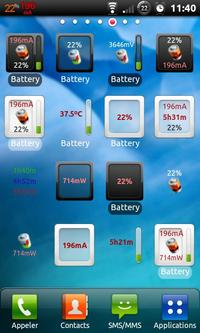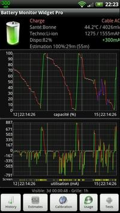
Informamos que hay dos versiones, la Free y la Pro, con la única diferencia que ésta no tiene publicidad y tienes todas las opciones desbloqueadas. A continuación vamos a analizar cada una de las características y opciones que nos ofrece:
- Posibilidad de añadir los widgets al escritorio principal para tener siempre los datos visibles.
- Medidas de capacidad de la batería real con datos históricos.
- La capacidad de actualización de la batería basada en la calibración y los datos históricos.
-Alarma configurable de la batería (tensión y los límites de temperatura).
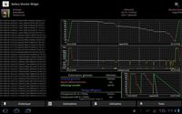
Personalmente creo que es una aplicación 100% recomendable y que debemos de apuntarnos para llevarla siempre con nosotros. Es una aplicación que denominaríamos de categoría de Utilidades y que nos va a dar mucha información de nuestro teléfono que ni siquiera muchos sabíamos que se podía obtener.
Descargar Battery Monitor
Seguramente también te interesará...
- Los mejores temas para Theme Chooser de CyanogenMod
- Fotos panorámicas al estilo Ice Cream Sandwich con estas geniales aplicaciones
- DXHome, un Launcher al estilo MIUI muy personalizable
- Cuenta tus viajes a todo el mundo con Android
- 5 aplicaciones del tiempo que además embellecen tu Android
- Apps Chorras y Rumores de la Semana (#lagenteestamuyloca)
- Apps Chorras y Rumores de la Semana (#PorCualVamosYa?)
- Suites de Ofimatica en tu Android
LiveProfile, alternativa a la sombra de Whatsapp
Thu, 24 Nov 2011 00:20:56 PST
Casi no hay usuario de telefonía móvil en día que no haya oído hablar de Whatsapp, incluso aunque nunca haya tenido un smartphone. Tal es el éxito de este programa de mensajería instantánea en el móvil que incluso se convierte en un motivo a la hora de decidirse por la compra de un terminal y [...]
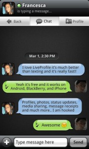Casi no hay usuario de telefonía móvil en día que no haya oído hablar de Whatsapp, incluso aunque nunca haya tenido un smartphone. Tal es el éxito de este programa de mensajería instantánea en el móvil que incluso se convierte en un motivo a la hora de decidirse por la compra de un terminal y hemos llegado a ver incluso publicidad de algunos operadores que anuncian la disponibilidad de un móvil destacando que incluye esta aplicación.
El caso es que con Whatsapp como dominador absoluto de estas aplicaciones que están enviando al retiro al, excesivamente simple y sobre todo de pago, SMS encontramos múltiples aplicaciones de mensajería que intentan desde convertirse en el próximo rey de la colina hasta contentarse con encontrar un hueco en el mercado a su sombra.
Así pues cada cierto tiempo nos encontramos tanto con nuevos lanzamientos como con actualizaciones que intentan conseguir que una aplicación reuna una base de usuarios suficiente como para que empiece el efecto contagio puesto que lo peor que le puede pasar a una de estas aplicaciones por muy buena que sea es que al utilizarla nos encontremos con que no podemos hablar con nadie.
LiveProfile, sencilla, rápida y con PIN
Aunque ya la mencionamos en un especial de aplicaciones de mensajería hasta ahora no le habíamos dedicado una mirada en profundidad a LiveProfile y desde entonces, por ejemplo, se ha lanzado la versión para Blackberry que unida a las de Android e iOS amplía el posible número de usuarios finales con los que poder comunicarse a través de la aplicación.
Para comenzar LiveProfile compatibiliza las dos formas más conocidas de agregar a un contacto en los programas de mensajería móvil, una es directamente mediante su número de teléfono como puede ser en el caso de Whatsapp lo que facilita buscar entre los contactos que ya figuran en nuestro listín telefónico, la segunda es mediante un PIN lo que permite añadir a usuarios con los que comunicarse sin tener que darles nuestro número de teléfono de la misma forma que en las Blackberry. Y por si te parece poco también puedes buscar entre tus contactos de Facebook, Twitter y correo electrónico.
Una vez comencemos a usar LiveProfile podremos ver que con algunas diferencias tenemos unas cuantas funciones que lo convierten en una aplicación con un toque social. En concreto no sólo podremos configurar nuestro avatar y nuestro estado para que pueda ser visualizado en una pestaña en forma de timeline que muestra las actualizaciones de todos nuestros contactos, sino que existe un máximo de 140 para el mismo ya que puede ser compartido tanto en Twitter como en Facebook. Además cuando compartamos nuestro perfil podremos seleccionar que datos son visibles, correo, cumpleaños, teléfono, etc).
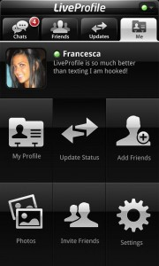En cuanto a las notificaciones hace uso como no podía ser de otra forma de la tecnología push para recibir mensajes y respecto a los enviados no sólo podremos ver cuando han sido enviados y recibidos sino que también podremos comprobar si ha sido leído o no, algo que quizás reste un poco de privacidad pero que en muchas ocasiones se echa de menos en Whatsapp.
Entrando ya en los mensajes en sí LiveProfile hace uso de emoticonos y permite enviar imágenes y vídeo sin embargo cojea al no soportar el envío de audio ni de nuestra ubicación lo que supone el primer punto en contra.
El segundo punto en contra y quizás el más importante es aparte de que por el momento no haya versión para Symbian, que no se pueda realizar chats de grupo, una funcionalidad que aunque tardó en llegar a Whatsapp se ha mostrado como una de las más solicitadas y que una vez probada se muestra muy útil.
A pesar de estas limitaciones LiveProfile es una buena aplicación y una buena muestra de las alternativas disponibles, sin embargo como decía antes hay un obstáculo muy claro cuando se trata de competir en este campo y es la frase “es que todo el mundo tiene ya Whatsapp” así que a no ser que las caídas de servicio que de vez en cuando dejan “incomunicados” durante horas a los usuarios terminen cansándoles e invitándoles a probar otras opciones de momento me sigue pareciendo que el trono seguirá ocupado por la misma aplicación mucho más tiempo.
LiveProfile es una aplicación gratuita y compatible con Android 1.6 en adelante.
Seguramente también te interesará...
- MSN Messenger oficial para tu Android
- PingMe, prometedor rival de Whatsapp con funciones sociales
- Mensajería instantanea. Porque no sólo de Whatsapp vive Android
- 6 cosas que Android debería tener ya
- 2 excelentes aplicaciones de mensajería instantánea: MiTalk y eBuddy XMS
- Facebook Messenger para Android, la nueva app de mensajería instantánea de Facebook
- Alternativas de mensajería instantánea: Análisis de GroupMe
- Messenger para Android, Gtalk, Skype, Facebook…: Todos los chats en uno
La historia de HTC en un vídeo con android como protagonista
Wed, 23 Nov 2011 22:50:36 PST
HTC ha sido el principal aliado, amigo e impulsor de Android, de eso no hay duda, y ellos mismo, HTC, lo sabe y en este vídeo vemos la historia de HTC contada por ellos mismos, desde 1997 (es incréible lo joven que es y lo grande que se ha convertido, y por tanto lo rápido [...]

HTC ha sido el principal aliado, amigo e impulsor de Android, de eso no hay duda, y ellos mismo, HTC, lo sabe y en este vídeo vemos la historia de HTC contada por ellos mismos, desde 1997 (es incréible lo joven que es y lo grande que se ha convertido, y por tanto lo rápido que va la tecnología) pasando por la primera vez que se utilizó ya la palabra smartphone, luego las conexiones 3G en 2005, o el GPS, por supuesto las pantallas táctiles, llegando hasta el glorioso 2008, donde apareció el primer android, y a partir del cual el crecimiento de HTC se disparó definitivamente.
Un pequeño vídeo que merece la pena ver, sobre todo porque no es sólo la historia de HTC si no en general de toda la telefonía móvil, esa misma que si ha crecido tantísimo en los últimos 15 años, que no nos deparará en los próximos 15 años? Espero estar por aquí para contarlo y compartirlo
Seguramente también te interesará...
- La historia y los comienzos de Android, el sistema operativo de Google
- Videoreview y más del HTC Desire Z, un gran teléfono
- HTC Sensation XL en exclusiva con Orange este mes
- Privacidad en Android: ¿Nos siguen y registran o es alarmismo?
- Apps Chorras y Rumores de la Semana #Hoyconracióndoble
- HTC Edge, el primer Quadcore de la firma en fotos
- Google confirma la llegada de Ice Cream Sandwich el día 11 con un video contador en Youtube
- Nuevo HTC Sensation XL, con Beats Audio y pantalla de 4,7″
El Android Market Web ya detecta dispositivos no oficiales
Wed, 23 Nov 2011 10:37:52 PST
Normalmente la mayoría de los dispositivos con Android que encontramos en el mercado vienen con el Android Market integrado en sus entrañas para facilitarnos un poco las cosas. Pero para poder incorporar ese permiso de fábrica, es necesario que Google lo apruebe. Sin embargo hay muchos otros fabricantes que deciden prescindir del Android Market pero [...]
Normalmente la mayoría de los dispositivos con Android que encontramos en el mercado vienen con el Android Market integrado en sus entrañas para facilitarnos un poco las cosas. Pero para poder incorporar ese permiso de fábrica, es necesario que Google lo apruebe.
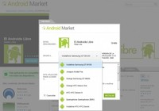
Sin embargo hay muchos otros fabricantes que deciden prescindir del Android Market pero no por ello del sistema operativo Android. Actualmente hay muchos métodos para que dispositivos que no incorporen el Android Market de fábrica puedan acceder a el (véase el Kindle Fire) pero este tenía una pequeña pega y es que cuando accedíamos mediante el market web no nos aparecía nuestro dispositivo.
Pues esto parece que ha cambiado porque a partir de ahora será posible instalar aplicaciones desde el Market web en dispositivos no autorizados por la propia Google. ¿Esto es bueno o malo para Android? A Android en sí no sé, pero sin duda hará crecer a la tienda ya que muchos de los compradores del Kindle Fire (por ejemplo) querrán acceder al Android Market en vez de a la pobre Amazon Appstore.
Y a tí, ¿ que te parece esto? ¿Cómo crees que repercutirá en el Market?
Seguramente también te interesará...
- Las 10 aplicaciones Android más usadas del mundo y las 50 más imprescindibles
- Descarga e instala el nuevo Android Market con interfaz totalmente renovada
- Primeros pasos con Android: las aplicaciones más comunes
- La información más detallada del estado de la batería de nuestro Androide: Battery Monitor Widget
- Fotos panorámicas al estilo Ice Cream Sandwich con estas geniales aplicaciones
- ¿Empiezas en Android? Las cinco preguntas básicas resueltas
- Recomienda y descubre nuevas aplicaciones gracias a AppLovin
- Los mejores temas para Theme Chooser de CyanogenMod
El primer Android que mide la duración de la batería en semanas: Kyobo eReader
Wed, 23 Nov 2011 06:55:55 PST
La tecnología es un mundo que está en constante movimiento, siempre se están investigando nuevas maneras de hacer las cosas para mejorar eficiencia y rendimiento. Uno de los puntos que más nos afecta como usuarios de dispositivos móviles son las baterías, ya que duran lo justo y a veces ni eso. Lo que más consume [...]
La tecnología es un mundo que está en constante movimiento, siempre se están investigando nuevas maneras de hacer las cosas para mejorar eficiencia y rendimiento.
Uno de los puntos que más nos afecta como usuarios de dispositivos móviles son las baterías, ya que duran lo justo y a veces ni eso. Lo que más consume batería en nuestros dispositivos es la pantalla y muchos avances se realizan en estas mismas para hacer que consuman menos.
Hoy vamos a ver un e-reader con Android que usa la tecnología Mirasol de Qualcomm prometiendo una batería que dura semanas. Se trata del Kyobo e-reader y tiene muy buena pinta.
La tecnología Mirasol permite gastar mucha menos energía que las tradicionales LCD, permitiendo tener colores muy reales y ver vídeos en el dispositivo con un gasto mínimo de batería.
Por ahora está diseñada para lectores electrónicos, pero Qualcomm está invirtiendo una gran cantidad de recursos para construir plantas de producción a gran escala de las pantallas con tecnología Mirasol y usarla en más dispositivos.
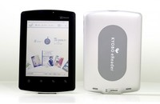
Las características del reader son una pantalla de 5.7” (1024×768), un procesador Qualcomm Snapdragon S2 de 1GHz y Android 2.3.
Por ahora solo está disponible en Corea del Sur y no sabemos si se venderá en más países.
La verdad que este tipo de pantallas pueden ser un avance importante para el mundo de los dispositivos móviles, si se perfecciona quizá podríamos ver algún smartphone usando estas pantallas de gran duración de batería.
Con la puesta en marcha de la planta de fabricación de Qualcomm es muy seguro que a lo largo de 2012 veremos más dispositivos usando las pantallas Mirasol.
Os dejo con un vídeo para ver un poco el reader.
¿Qué os parecen estas pantallas?
Vía: Androidandme.com
Seguramente también te interesará...
- Las nuevas tecnologías de baterías y ahorro de consumo en smartphones y tablets
- Descarga, lee y sincroniza tu librería con la web: Legimi
- Comparativa de eReaders (apps) en Android
- Qualcomm presenta nuevos Procesadores y una Tienda de juegos
- Tus llamadas de teléfono a pantalla completa, con fotos grandes y mucho más
- Los 3 mejores lectores de PDF para tu Android
- Las pantallas del futuro, buscando la experiencia perfecta: Resolución, resistencia y funcionalidad
- El primer Android Quadcore y la primera fecha para la llegada Ice Cream Sandwich
Las mejores apps para escribir en tu Android desde el PC
Wed, 23 Nov 2011 00:41:27 PST
Tras un forzado parón por estos lares, vengo con una opción más que útil y seguro que a muchos les viene de perlas. ¿Cuántas veces estando en casa empezamos a recibir notificaciones de mensajes, bien de Whatsapp, Gtalk o de cualquier otra plataforma? Supongo que la mayoría, pero bien ¿cuántos de ellos no contestamos por [...]
Tras un forzado parón por estos lares, vengo con una opción más que útil y seguro que a muchos les viene de perlas. ¿Cuántas veces estando en casa empezamos a recibir notificaciones de mensajes, bien de Whatsapp, Gtalk o de cualquier otra plataforma? Supongo que la mayoría, pero bien ¿cuántos de ellos no contestamos por pereza a tener que escribir en el minúsculo teclado de nuestro Android? Pues al menos, yo, unas cuantas, y sobre todo cuando estoy delante del ordenador: pasar de un teclado a otro me parece una tortura… y es por ello, que sólo se me ocurre contestar cuando es de extrema necesidad, que suele ser muy pocas veces. Por consiguiente, muchos de esos mensajes quedan en el olvido, y esto tendría fácil solución si, al menos, pudiéramos contestar a ellos cuando estuviéramos en un PC.
Llámenme gandul, cutre, dejado o lo que quieran, pero se que no soy el único, y que existan aplicaciones para solventar lo que hablo indican una necesidad del usuario… y como no, en EAL no se nos pueden escapar.
Recientemente en Omicrono, mi compañero Danny mostró estas opciones tanto para Android como para iPhone/iPad, así que si hay algún despistado no Androidiano que se pase por aquí ;-)
WiFi Keyboard
WiFi Keyboard nos ofrece una solución aceptable, pero no perfecta, para poder escribir desde nuestro PC haciendo uso de la misma red wifi.
Para usarla, tan sólo debemos instalarla y después ir a Ajustes > Teclado e Idioma > Y verificar WiFi Keyboard.
Ahora, cada vez que queramos escribir con el teclado del PC, desde Android en cualquier cajón de texto donde podamos escribir, mantenemos pulsado durante unos segundos hasta que nos aparezca “Método de introducción de texto” y seleccionamos dicha aplicación. Nos aparecerá una notificación como que está activado y en el navegador de nuestro PC tenemos que poner la dirección ip que nos muestra la app. Nos aparecerá la siguiente captura de pantalla:
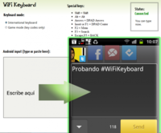
Pero no sólo podemos hacer uso del teclado para escribir, si no también de sus cursores para poder jugar. Si os dais cuenta, en la página del navegador veréis una opción que pone “Game mode”, activándola podréis jugar sin problema. Como opción está bien, pero en la práctica no le veo mucha utilidad, igual tendría más sentido si disponemos de algún dock para el móvil…
Como comentaba al principio, decía que no es perfecta por el siguiente motivo: todo lo que escribimos en la pantalla del ordenador no nos aparece, si no que lo hace directamente en nuestro móvil. Cuesta un poco acostumbrarse. Y como fallo gordísimo: no atiende al pulsar la tecla “enter”, por lo que tienes que ir a caballo entre el móvil y el PC.
ezKeyboard
Otra opción muy similar a la anterior, pero quizás con más opciones es ezKeyboard. El funcionamiento es igual que la anterior, la instalamos, activamos en ajustes y luego nos dirigimos a nuestro navegador a la ip que nos indique.
En el navegador nos aparecerá la siguiente captura de pantalla:
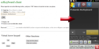Podéis comprobar como cuenta con más opciones que la primera, como la de establecer una contraseña para poder escribir desde el PC, el uso de cursores mediante el ratón, limpiar el texto de la pantlla o incluso copiar del propio teléfono. En esta sí que aparece el texto en el navegador y sí se puede utilizar intro, pero para un uso que no me ha gustado, me explico: cuando hayamos escrito algo, si queremos que aparezca en la pantalla del teléfono tenemos que darle a intro (o al botón de OK). Cuando yo me refería al uso de éste era para poder enviar el texto dentro de la propia aplicación en la que nos encontremos, pero no es así.
También nos ofrece la posibilidad de conectarlo mediante cable.
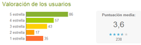
Remote Keyboard Input Method
La tercera y última opción que os proponemos es la que, personalmente, me ha gustado más y os comento por qué: el uso de este tipo de aplicaciones tiene sentido si su accesibilidad es buena, pero creo que depender de navegadores, IP’s y demás, puede dificultar no bien su uso, si no los pasos que hay que dar para poder usarlo.
Es aquí donde se desmarca esta sencilla pero gran aplicación. Sin duda es mucho más costosa que las anteriores para poder instalarla, pero hecho esto el resto va como un tiro y todo muuucho más sencillo.
En la siguiente imagen os muestro los pasos que tenéis que dar para poder instalarla tanto en el PC como en Android:
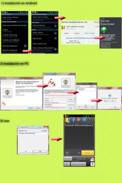
-
Instalación en Android: lo primero de todo descargar la aplicación desde el Market. Luego, en ajustes, activar dicho teclado, y después nos metemos en “Ajustes de Remote Keyboard”. Dentro, la primera opción que encontramos es la de mandar un link a nuestro email para que nos lleve al sitio web donde tendremos que descargar el software necesario para usarlo en nuestro PC.
-
Instalación en PC: lo de siempre, siguiente > siguiente > y siguiente. En la segunda imagen os da opción a registraros, probar el producto, o acceder desde una cuenta que ya tengáis creada. Si sólo queréis probar, marcad la opción “Continue Trial”. Nos aparecerá una ventana indicándonos los dispositivos que tenemos conectados en la propia red.
Ojo al dato: para que os aparezca vuestro dispositivo es imprescindible que antes hayáis marcado como método de introducción de texto “Remotekeyboard” (ya sabéis: mantened durante unos segundos en cualquier caja de texto para alternar entre teclados)
Hecho todo esto, ya podéis coser, cantar y bailar al mismo tiempo. Ahora cada vez que nos llegue cualquier mensaje, al leerlo y pulsar para responder nos aparecerá, directamente en nuestra pantalla del PC, una ventana para poder escribir.
Pros: más sencillo que los anteriores, mucho más práctico, funciona genial, uso del intro (pero sólo para hacer saltos de línea, para enviar el texto sólo hay que clickar en “send”).
Contras: la pantalla del teléfono se mantiene continuamente encendida a menos que la apaguemos, en la versión de prueba sólo dispones de hasta 30 envíos de texto, cifra que me parece ridícula ya que mi uso es más estilo chat: “hola” (envío), “qué tal?” (envío)… y… esto no les gustará algunos: tiene un coste. Su precio es de 3$, al cambio unos 2€ (céntimo arriba/abajo). Su pago es mediante paypal, y sinceramente no me parece ningún disparate su precio y si a lo largo del día termino de cogerle el gusto, muy probablemente acabe pagando por ella, pero me mosquea mucho, bastante, que su última actualización sea del 18 de septiembre de 2010.

¿Qué os parecen este tipo de apps? ¿Os resultan útiles? ¿Haríais uso de ellas? ¿Usáis alguna que no esté en la lista? ¡Coméntanos! ;-)
Seguramente también te interesará...
- Cómo usar WhatsApp desde el PC: Tutorial completo paso a paso
- Viste de Android a Windows 7 con Android Skin Pack 1.0
- Controla y visualiza tu Android desde el PC remotamente
- Especial teclados para Android: elige el mejor según tus necesidades
- Las mejores aplicaciones para tablets Android Honeycomb
- Perfect Keyboard: otro gran teclado para Android
- BlueStacks: Tus aplicaciones de Android en Windows
- Instálate el teclado de Ice Cream Sandwich en cualquier android sin root
Previsualiza tus aplicaciones en el teléfono con Android Design Preview
Sun, 27 Nov 2011 08:07:48 PST
Hoy os traemos una sencilla pero interesante aplicación para aquellos que estáis desarrollando aplicaciones en Android, aunque puede que otros le encuentren alguna que otra utilidad. Se trata de Android Design Preview, y con ella podremos ver una vista previa de como queda nuestra aplicación en la pantalla de nuestro teléfono, sin necesidad de tener que instalas [...]
Hoy os traemos una sencilla pero interesante aplicación para aquellos que estáis desarrollando aplicaciones en Android, aunque puede que otros le encuentren alguna que otra utilidad.
Se trata de Android Design Preview, y con ella podremos ver una vista previa de como queda nuestra aplicación en la pantalla de nuestro teléfono, sin necesidad de tener que instalas el APK, a modo de LiveView.
Android Design Preview
Decir que más que a los desarrolladores, esta aplicación puede estar más orientada a los diseñadores de las mismas (aunque en muchas ocasiones el trabajo lo realice la misma persona). Con ella, podemos seleccionar una parte de nuestro escritorio que será la que se “clonará” en la pantalla de nuestro teléfono.
De esta forma, tenemos una idea mucho más real y acertada de como quedará nuestro diseño fuera de la pantalla de ordenador y ver si queda todo bien al pasarlo a la pantalla del smatrphone.
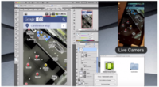
Con esto podemos ir realizando los cambios que queramos tranquilamente desde el PC e ir viendo al momento como queda, ya que en muchas ocasiones al trabajar en photoshop, por ejemplo, el resultado es bueno pero al reducir el tamaño no es lo mismo.
Para poder funcionar solo necesita una conexión USB y estar ejecutando el SDK, y además es un software que está disponible para Windows, Linux y Mac, así que sea cual sea el OS que uses, podrás beneficiarte de esta ventaja. Y como hemos dicho, está enfocada principalmente al diseño de aplicaciones, pero puede servirnos también si estamos optimizando una web para móviles, o cualquier otra utilidad que se os ocurra. Por supuesto, podéis dejarlas en los comentarios, que seguro que ideas hay muchas.
Android Design Preview | Descarga
Fuente: Google + | Roman Nurik
Seguramente también te interesará...
- Los Libros Open Source sobre Android
- Un poco más de Ice Cream Sandwich y lo que quiere Google de él
- WiMM presenta un Android de muñeca
- Instala múltiples ROMs en tu Android con BootManager
- Multiple APK o cómo la fragmentación podría tener los días contados
- El valor oculto de Android, la comunidad de desarrolladores y su repuesta.
- Los desarrolladores empiezan a pensar antes en Android
- Si eres desarrollador Android no te puedes perder el ExpansionDay
Llega el AppCircus Academy a Madrid, un evento ideal para desarrolladores
Sun, 27 Nov 2011 00:53:37 PST
Hace ya un tiempo, con motivo del pasado Mobile World Congress os hablé del AppCircus. Si no lo recordáis os lo resumo: Appcircus es lo más parecido a un circo o mercadillo en la web 2.0. Esta página reúne las mejores aplicaciones de cada desarrollador y viaja a todos los grandes eventos de Android a [...]
Hace ya un tiempo, con motivo del pasado Mobile World Congress os hablé del AppCircus. Si no lo recordáis os lo resumo: Appcircus es lo más parecido a un circo o mercadillo en la web 2.0. Esta página reúne las mejores aplicaciones de cada desarrollador y viaja a todos los grandes eventos de Android a nivel mundial enseñándolas a la gente. Por descontado es un medio genial para dar a conocer tu aplicación. Pues bien, de sus creadores llega AppCircus Academy a Madrid. ¿Quieres saber de qué va? Pues sigue leyendo que te lo contamos todo.
AppCircus Academy
AppCircus Academy es, como su hermano mayor, un evento de media jornada dirigido a la comunidad de desarrolladores y a los profesionales de la industria móvil. Tiene la intención de promover y conseguir que éstos se conozcan, exploren nuevas ideas y descubran soluciones originales a los típicos problemas que se enfrenta un desarrollador. Pues bien, nos han comunicado que Madrid acogerá el primer AppCircus Academy en la Universidad Carlos lll el martes 13 de diciembre, en español y será completamente gratuito.
Allí podrás
- Aprender sobre nuevas tecnologías en workshops exclusivos de la mano de las empresas (plazas limitadas!)
- Unirte a los expertos que compartirán sus conocimientos sobre la economía de las apps.
- Fortalecer tus relaciones con otros profesionales de la industria.
- Subir al escenario y presentar tu app en el concurso estrella AppCircus.
Vamos, que si eres desarrollador no está nada mal. Por descontado hay muchas más cosas como podéis ver en el planning
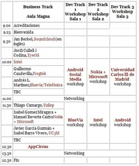
Pero vamos, que si estáis interesados podréis encontrar muchísima más información sobre las actividades y los workshops en su web (la verdad es que tienen buenísima pinta).
En resumen: un evento genial para desarrolladores, en Madrid y gratis.
Más información y registro en AppCircus
Seguramente también te interesará...
- Si eres desarrollador Android no te puedes perder el ExpansionDay
- Los Libros Open Source sobre Android
- Google y Samsung posponen la presentación de Ice Cream Sandwich y Nexus Prime :(
- Un poco más de Ice Cream Sandwich y lo que quiere Google de él
- 20 horas de YouTube para aprender a programar Android
- ¿Qué es y en qué nos beneficia el HTC OpenSense SDK?
- Multiple APK o cómo la fragmentación podría tener los días contados
- El Android SDK y los tools se actualizan a la versión r12
Fandroide, lo mas Android de la red (V)
Sat, 26 Nov 2011 07:28:39 PST
Bienvenidos sean todos a una entrega mas de Fandroide, la sección semanal donde os traemos las curiosidades más raras, además de algunos productos que tienen la forma de nuestro Androide querido, terminando con cinco fondos de pantalla que seguro que le gustan a mas de uno de vosotros… Hoy hemos traído el juego de Angry Birds convertido en [...]

Bienvenidos sean todos a una entrega mas de Fandroide, la sección semanal donde os traemos las curiosidades más raras, además de algunos productos que tienen la forma de nuestro Androide querido, terminando con cinco fondos de pantalla que seguro que le gustan a mas de uno de vosotros…
Hoy hemos traído el juego de Angry Birds convertido en juego de mesa , un par de cosillas de Amazon, y los cinco fondos de pantalla habituales, como siempre ;)
¿Te interesa? Sigue leyendo…
Lo primero es el juego de mesa. Al parecer, Mattel ha visto una mina de oro en Angry Birds, y se han decidido por hacer un bonito juego de mesa relacionado con ellos. El juego incluye catapulta, varios pajaritos, bloques, y a nuestros enemigos los cerdos. Tenemos que montar los bloques según la carta que cojamos, y los demás tienen que destruir la estructura. Pueden jugar de dos a cuatro jugadores, y está recomendado para mayores de cinco años. Con el puedes pasar un buen rato con la familia o los amigos, en un juego bastante divertido. Puedes conseguirlo en tiendas como quelovendan.com (de la conocida web No Puedo Creer ;) ) o Amazon.
Ahora vamos con los productos, hoy sacados de Amazon (filial de Inglaterra). El primero es un adorable peluche de Android de unos 20cm. Si lo quieres lo tienes a 4.99 libras aquí.
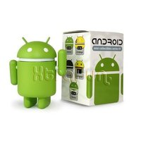
También tenemos una figura de Android, una de las de Dead Zebra, a 6.99 libras. Si la quieres date prisa, ¡que solo quedan muy pocos!
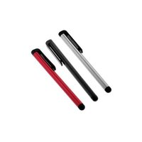
Unos Stylus que funcionan en cualquier pantalla táctil captativa (no detectan un Stylus como lo hace una pantalla resistiva) solo por 1.95 libras…
Y para terminar un peluche de un cerdo de Angry Birds oficial, suave, y cuando le abrazas suena alguno de sus sonidos característicos! Lo tienes por 18.99 libras aquí.
Vamos a terminar con los fondos de pantalla, hoy de ganaplataptc. Para guardarlos haz como siempre: abre la miniatura y en los menús secundarios Guardar Imagen como… ;)
Y con esto damos por terminado un Fandroide más. ¡Hasta la próxima!
Seguramente también te interesará...
- Fandroide, los más Android de la Red (IV)
- Fandroide, lo mas Android de la Red (III)
- Fandroide, lo más verde del mundo de Android: Capítulo II
- Fandroide, lo mas Android de la red
- Juegos de la Semana: Hoy con policía, superdeportivos y pájaros asustados
- El futuro de Android: lo que nos queda por ver este año y el siguiente
- Juegos de la Semana, raciones dobles de Dragones y Zombis, ¡Vente!
- El Reloj Android que te va enamorar: i’m Color y i’m Jewel, toda una gama de 7 colores
Cloudless: sincroniza tu Android con tu PC de forma inalámbrica.
Fri, 25 Nov 2011 10:10:35 PST
La tecnología está avanzando a pasos agigantados últimamente y eso hace que cada vez tengamos más aparatos en casa. Desde tablets, smartphones, netbooks, portatiles, sobremesas, televisiones inteligentes y un sin fin más de dispositivos. Y esto francamente esta muy bien pero supone un gran problema: Cuando descargamos una canción o tomamos una foto, solo la [...]
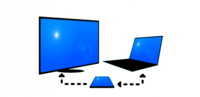La tecnología está avanzando a pasos agigantados últimamente y eso hace que cada vez tengamos más aparatos en casa. Desde tablets, smartphones, netbooks, portatiles, sobremesas, televisiones inteligentes y un sin fin más de dispositivos. Y esto francamente esta muy bien pero supone un gran problema: Cuando descargamos una canción o tomamos una foto, solo la tenemos en el mismo dispositivo con el que la hayamos realizado mientras que si queremos tenerla en nuestro PC por ejemplo, tenemos que recurrir al cable USB o al Bluetooth.
Pero como siempre aquí está El Androide Libre para ayudaros un poquito más y sacar más provecho del sistema operativo Android. En este caso os traemos una aplicación bastante interesante que nos ayudará a sincronizar imágenes, vídeos y canciones de forma inalámbrica entre nuestro dispositivo Android y nuestro PC. Se llama Cloudless.
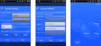
No debe engañarnos el nombre de la aplicación ya que no tiene nada que ver con Cloud (nube). Su funcionamiento consiste básicamente en sincronizar las carpetas que seleccionemos con nuestro PC vía Wi-Fi, eso sí, ambos dispositivos tienen que estar conectados a la misma red Wi-Fi por lo que eso puede ser una pequeña pega ya que por ejemplo, en muchas ocasiones nos gustaría que cuando llegásemos a casa tuviéramos en nuestro PC las fotos que hemos estado tomando con nuestros amigos para poder subirlas rápidamente a nuestras redes sociales.
La aplicación consta de unos sencillos pasos con los que conseguiremos configurar nuestra sincronización. En el PC no es necesario instalar ningún programa por lo que en este sentido es bastante cómodo ya que somos muchos los que no nos gusta instalar programas por instalar.
La mayor pega que podemos encontrar es que está en inglés, pero no obstante con tener unos conocimientos mínimos de este podemos manejarla sin problemas. La aplicación está en versión alpha y la podéis descargar como siempre desde el Android Market a un precio de 0,0€ .
Seguramente también te interesará...
- Winamp para Android se actualiza con sincronización inalámbrica y ecualizador
- Controla y visualiza tu Android desde el PC remotamente
- Sincroniza tu Android con tu Mac gracias a SyncMate
- Comparte y sincroniza tus imágenes automáticamente en una red local
- La solución completa para exportar tus contactos de Nokia o Blackberry a Android
- Aislado del mundo, solo tu Android y tú
- Juegos Android de la Semana: Aviones de papel, videojuegos retro y puzzles
- Fandroide, lo mas Android de la red (V)
Galaxy Nexus versus iPhone 4s versus Galaxy S II versus Motorola Razr
Fri, 25 Nov 2011 03:25:51 PST
Todos deberíamos saber ya, que no existe el teléfono perfecto (lo que si existe es el más completo y el que te permita más libertad de elegir, ya sabéis de lo que hablo no?) y menos si nos los hemos probado directamente con nuestras manos y nuestro uso del día a día, pero es verdad que [...]
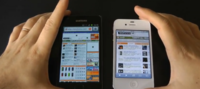
Todos deberíamos saber ya, que no existe el teléfono perfecto (lo que si existe es el más completo y el que te permita más libertad de elegir, ya sabéis de lo que hablo no?) y menos si nos los hemos probado directamente con nuestras manos y nuestro uso del día a día, pero es verdad que no siempre tenemos acceso a todos ellos y un buen vídeo comparado algunas de las cosas más típicas de los smartphones, ayuda a decidir nuestra compra, importante sin duda, a si que sirvan estos vídeos de comparativas como pista o guía para tomar una decisión, entre los que se postulan como los más deseados y potentes smartphones del momento, con permiso de algunos ausentes, como el Sensation XL por ejemplo.
Vamos pues allá con la ronda de enfrentamientos y con algunas gráficas que nos dejan ver cómo el Galaxy Nexus gana en velocidad y navegación, pero se desinfla frente al iPhone en gráfica, cosa que por otro lado ya sabíamos.
Primero el iPhone 4s contra el Galaxy S2
Ahora el Galaxy nexus contra el Samsung Galaxy SII
Y Ahora el Nexus Galaxy contra el iphone 4s
Ahora el Galaxy SII contra el Motorola Razr
Y el Razr contra el iPhone 4s
Y por último los resultados de navegación y gráfica del Nexus Galaxy con respecto a otros teléfonos. Poco más que decir salvo que por supuesto nosotros en las próximas semanas tendremos el placer de tener un Motorola Razr y un Galaxy Nexus y por supuesto os haremos el análisis detallado de costumbre, eso si, por separado, no se vayan a picar tanto gallo en un mismo corral.

A nivel personal a la hora de decidir, me plantearía dos escenarios:
Uno, tener un android ya desfasado como una magic por ejemplo u otra teléfono X pongamos un Nokia 5800
Dos, en el que ya seamos usuarios de android o iphone me vale con teléfonos de hace un año pero que nos pica el gusto por renovar, pongamos un iPhone 4 o 3Gs, un HTC Desire o Samsung Galaxy S.
En el primero de los casos yo, personalmente me decantaría por el Razr, es un teléfono muy compacto y de uns construcción espectacular, no me preocuparía porque no sea la última versión de Android, ya llegará, y si quieres ahorra en la medida de lo posible, el Galaxy 2, un smartphone que rinde maravillosamente, descarto el Note por ser enorme, el Sensation XL por no aporta nada nuevo y el galaxy por caro y sólo por tener la última versión de Android, que insisto, llegará al resto (al menos de los citados aquí)
Si estás en el segundo caso, el de renovar sin prisa, sólo por gusto, yo me esperaría a Marzo o Mayo de 2012 porque deben llegar novedades, bien sea en forma de Procesadores de 4 núcleos, Android 4.0 de serie , etc, etc, o si lo prefieres, estos mismos, pero a un precio mucho mejor. Las Navidades, a pesar de ser el mayor escaparate de compra, no son la mejor fecha para smartphones punteros, las novedades que llegan son pequeñas con respecto al salto cualitativo que se da en Marzo con el MWC.
La última palabra la tienes tu. pero sobre todo no te pierdas nuestras reviews del Note, Nexus Galaxy y Razr próximamente. :)
Seguramente también te interesará...
- No hemos encontrado nada relacionado, debe de ser contenido fresco :D
Chu-Chu Rocket para Android, Sega vuelve a la carga
Thu, 24 Nov 2011 23:15:37 PST
Hace apenas dos semanas os comentaba un juego de rol llamado Fallen Realms, que para mí resultó ser francamente decepcionante, aunque teniendo en cuenta que era gratuito, pues valía la pena probarlo y ver qué tal (a fin de cuentas para gustos, colores). No obstante, a mí me resultó muy triste ver que una empresa [...]
Hace apenas dos semanas os comentaba un juego de rol llamado Fallen Realms, que para mí resultó ser francamente decepcionante, aunque teniendo en cuenta que era gratuito, pues valía la pena probarlo y ver qué tal (a fin de cuentas para gustos, colores). No obstante, a mí me resultó muy triste ver que una empresa histórica como Sega entraba en el mundo de los videojuegos en Android como un elefante en una cacharrería.
Sin embargo, parece que han decidido resarcirse del, para mí, fallo que cometieron, trayéndonos la versión de un puzzle que desarrollaron hace años para su Dreamcast y que versionaron después para otras plataformas. Sega nos ha creado una versión más que buena de ChuChu Rocket.
Para los que no lo conozcais, ChuChu Rocket es un puzzle que desarrolló Sega hace más de 10 años para Dreamcast (y después portada a GameBoy Advance, y recientemente a iPhone y iPad). La mecánica de juego es bien sencilla, disponemos de un tablero con una serie de osbtáculos, en el que nos encontraremos ratones, cohetes y gatos. El objetivo es evitar que los gatos se coman a los ratones o a los cohetes, y conseguir guiar a todos los ratones hacia estos últimos, para que puedan escapar, una vez que estén todos a bordo del cohete habremos superado el nivel.
Sencillez
Como podéis ver en mi explicación en el párrafo anterior, la premisa sobre la que reposa el juego es extremadamente sencilla. No obstante, por si no fuera suficiente, al comenzar a jugar, podemos seleccionar un modo tutorial (de hecho al comienzo es lo único que podemos seleccionar para jugar) en el que se nos explican los conceptos básicos del juego.
Aún así, en esta simpleza radica su mayor virtud, pues es un juego que nos requerirá “coco”, pero sin obligarnos a largas partidas, y a tandas de juego que se estiren en el tiempo, simplemente sacar el móvil, jugar y volver a guardarlo.
Duración
Aunque los niveles son extremadamente cortos, sobre todo si aprendemos a resolverlos rapidamente, el juego posee más de 500 niveles en los que exprimirnos las neuronas para evitar que los gatos le chafen el viaje espacial a nuestros roedores. Además tienen un modo batalla en que podremos jugar acompañados de tres jugadores de la computadora para ver quién de nosotros consigue poner más ratones en órbita que los demás.
Calidad técnica
Es obvio que el juego no exprime en absoluto las tarjetas gráficas de nuestros móviles, y tampoco es algo que busque ni que sea necesario en un producto de estas características. Pero ¿y si esto no supusiera un problema sino una virtud? Tengo varios dispositivos Android, desde cosas potentísimas (como mi Transformer con su Tegra 2) hasta otros dispositivos más humildes (como mi Geeksphone ZERO), y en todos puedo jugar sin problemas al juego, sin ralentizaciones, sin diferencias y, en definitiva, sin sentir que debería haber comprado otra cosa para poder jugar, fue muy curioso entrar en mi versión web del Market para ver qué dispositivos podían ejecutarlo, y comprobar que toda la lista al completo estaba en verde, me costó decidirme…
Parece que Sega ha entendido lo que otros no entienden, y que es que hay muchas formas de exprimir técnicamente el teléfono usando los juegos, pero que si no es necesario hacerlo, lo mejor es quedarse quietecito, y ahorrar esfuerzos por su parte y batería por la nuestra.
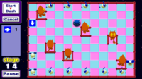Consumo
Precisamente gracias al apartado anterior, como no exigimos una barbaridad a nuestro teléfono, encontramos con que el consumo de batería no se dispara aunque estemos un rato jugando sin parar, lo cual lo convierte en un buen compañero cuando viajamos en tren al trabajo por las mañanas, o de vuelta a casa por las tardes.
Relación calidad-precio
Como todo, tenía que tener un pero. En este caso, es que, a diferencia de Fallen Realms, ChuChu Rocket no es gratuito, sino que tendremos que pagar unos 80 centimos de euro para poder disfrutarlo, aunque, por ese precio, la verdad es que obtendremos un juego cuidado, divertido, largo y dificil de terminar entero, por lo que os lo recomiendo encarecidamente.

Seguramente también te interesará...
- Fallen Realms, rol con aires ochenteros de la mano de SEGA
- Shadowgun para Android: Super análisis de uno de los mejores juegos de Android
- Duke Nukem 3D para Android, come get some!
- Juegos para móviles en Android y otras plataformas, ¿Dónde está el límite?
- Juegos de la Semana, pásatelo en grande con tu Android
- Juegos para Android, sigue entretenido con tu Smartphone…
- Tap Tap Revenge 4: dale ritmo a tus pulgares
- Aporkalypse: Pigs of Doom, HandyGames trae el fin del mundo a tu Android
Efectos vintage, retro y lomo para tus fotografías con Man With Camera
Thu, 24 Nov 2011 09:35:15 PST
Siguiendo un pequeño ciclo de aplicaciones relacionadas con la fotografía hoy vamos a ver una app muy interesante para el tratamiento de imágenes. Estamos hablando de Man With Camera o Un hombre con una cámara. Desde luego el nombre de la aplicación no lo estuvieron pensando mucho tiempo, pero el resultado de las imágenes merece [...]
Siguiendo un pequeño ciclo de aplicaciones relacionadas con la fotografía hoy vamos a ver una app muy interesante para el tratamiento de imágenes. Estamos hablando de Man With Camera o Un hombre con una cámara. Desde luego el nombre de la aplicación no lo estuvieron pensando mucho tiempo, pero el resultado de las imágenes merece la pena.
Lo bueno es que es una aplicación gratuita, y como aplicación sin coste se merece un espacio entre nuestras herramientas de fotografía dentro de nuestro Android.
Posiblemente esta vaya a ser un de las aplicaciones más sencillas que haya analizado, pero no por eso tiene que convertirse en algo malo. Al contrario, Man With Camera nos da la posibilidad de conseguir fotografías con efectos muy interesantes del tipo vintage y lomográfico, con sólo un par de pasos y en unos pocos segundos.
La pantalla principal de esta aplicación no es más que una cámara que podemos deslizar para cambiar y elegir entre tres modelos diferentes. La primera que nos encontramos es el modelo LOMO, la típica cámara que está tan de moda ahora por su efecto retro con esas imágenes de exposición algo más larga de la normal y colores cambiados.
Deslizándonos pasamos a una cámara vintage, un modelo antiguo que le dará a nuestras fotos un aspecto muy innteresante. Y por último nos encontramos con una cámara muy simple amarilla sumergible. Yo de hecho compre una exactamente igual a la que sale representada en este programa en eBay por 6€. Así que si haces a tu Android sumergible algo que te ahorras ;)
Al entrar en cada cámara nos encontramos con los diferentes efectos que se pueden aplicar a las imágenes tomadas con cada cámara, los mismos para las tres, pero cada uno con las características típicas de la cámara en cuestión.
Los efectos son los siguientes:
- Cross
- Push
- B&W
- Old Photo
- Vintage
- Sepia
Como os digo lo suyo es ir jugando, a 6 efectos por cámara y 3 diferentes modelos de cámara tenemos un total de 18 efectos que probar y que dan resultados diferentes, todos ellos muy interesantes. ¿El problema? Pues como con toda aplicación no podía ser perfecta. Cuando hacemos una fotografía lo hacemos después de seleccionar el efecto, y sería muy interesante hacerlo al revés, de modo que podamos ver y comparar los diferentes efectos sobre la fotografía que ya hemos hecho.

La aplicación no es una revolución y no tenemos ni acceso a ajustes, pero para ser gratis nos aporta efectos muy curiosos para dar a nuestras fotografías. Una forma extremadamente sencilla de dar un toque especial y diferente a las fotografías de nuestro Android.
Descargar Man With Camera de Android Market
Seguramente también te interesará...
- Efectos en tiempo real para tus fotografías con Nemus Camera
- Convierte tus fotografías en fotazos con Magic Hour para Android
- Las mejores aplicaciones de lomografía para Android: Little Photo, Pudding Camera, Retro Camera y Action Snap
- Juegos Android de la Semana: Aviones de papel, videojuegos retro y puzzles
- Fotografía en Android: Secuencias de fotografías y cámaras espía
- Fandroide, lo mas Android de la red (V)
- Cloudless: sincroniza tu Android con tu PC de forma inalámbrica.
- Apps Chorras y Rumores de la Semana #OMGvuelvemecano
Móviles Android por menos de 200 €, elige el tuyo
Thu, 24 Nov 2011 03:00:51 PST
Hace un mes, publicamos un lista de tablets Android por que rondaban un precio máximo de unos 200 €, hoy repetimos pero con smartphones, el origen de android. Algo que está claro es que una tablet no nos es tan necesaria como un móvil y a día de hoy a todos nos gusta poder llevarnos [...]
Hace un mes, publicamos un lista de tablets Android por que rondaban un precio máximo de unos 200 €, hoy repetimos pero con smartphones, el origen de android.
Algo que está claro es que una tablet no nos es tan necesaria como un móvil y a día de hoy a todos nos gusta poder llevarnos nuestro correo y redes sociales en el bolsillo, el cual no está para muchos bailes dada la situación económica actual, así que para esta ocasión, hemos recopilado una lista con los mejores teléfonos Android que se pueden comprar libres por esos precios. Y repetimos, este precio es Libre, sin ataduras a operadoras, que así es muy fácil bajar de 200€ :P
HTC Wildfire S
Es una remodelación de su predecesor Wildfire. En este nos encontramos una pantalla más nítida, manteniendo las 3.2″ y la desaparición del botón central, pasando a ser totálmente táctil y haciendo que el modelo tenga un aspecto más compacto.
En cuanto al rendimiento, cabe destacar un cambio de frecuencia en el procesador, que de los 528 Mhz ha pasado a 600 Mhz, siguiendo con 512 Mb de RAM y otros 512 Mb de almacenamiento (ampliable con tarjetas Micro SD), la cámara se mantiene en 5 Mpx con un LED a modo de flash y la versión de Android que carga es la 2.3.
Este terminal se puede encontrar en el mercado en un rango de precios de 195 a 209 euros, dependiendo de la tienda.
Samsung Galaxy Mini
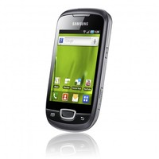
Este es el chiquitín de la aclamada gama Galaxy de Samsung. Con este Mini, nos encontramos ante una pantalla de 3.14″ sin botones táctiles, un procesador Qualcomm de 600 Mhz, una memoria RAM de 384 Mb, cámara de 3’15 Mpx (sin flash), memoria interna de 160 Mb ampliable mediante tarjeta Micro SD y la versión de Android es la 2.2.
Es un smartphone perfecto para aquellos que busquen algo básico y para iniciarse. Su precio oscila entre los 150 y 160 euros.
Sony Ericsson Xperia X8
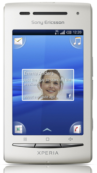
Sony Ericsson también tiene un competidor en este sector, ideal para iniciarse en el mundillo de los smartphones. Tiene un procesador de 600 Mhz, 168 Mb de RAM, 128 Mb de memoria interna y ampliable a 16 Gb con tarjeta Micro SD, cámara de 3’2 Mpx sin flash, sin botones táctiles y opera con Android 2.1.
No es un teléfono de los más potentes de esta gama, pero cumple de sobra con las funciones más básicas de un smartphone.
Podéis encontrarlo a partir de 175 euros.
LG Optimus ME
LG no iban a ser menos que otros y también tienen su propio representante en esta gama de terminales. El Optimus Me dispone de un procesador de 780 Mhz, 140 Mb de RAM, 140 Mb de memoria interna (ampliable con tarjeta Micro SD), pantalla de 2.8″, cámara de 3 Mpx y funciona con Android 2.2.
Por lo que podéis ver, es el que aporta el procesador más potente de los presentados y, posiblemente, el más versátil, con un precio que ronda los 140 €.
Para aquellos que os guste mensajear masivamente, chatear como posesos y el tema de prestaciones y multimedia lo relegáis a un segundo plano, en este apartado, os traemos unos terminales Android con teclado físico QWERTY a precios bastante atractivos y muy buenas alternativas para aquellos que queráis teclado físico sin tener que pasar por la austeridad de Blackberry.
Motorola Flipout
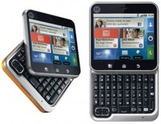 Este terminal resulta especialmente llamativo debido a su peculiar diseño. Es totalmente cuadrado y la apertura de su tapa es oscilante sobre una sola articulación.
Su procesador rinde a 700 Mhz, acompañado por una RAM de 512 Mb, cámara de 3 Mpx sin flash, pantalla táctil de 2.8″, 2 Gb de almacenamiento Micro SD ampliable hasta 32 Gb y la versión de Android que opera en él es la 2.1.
El precio de este peculiar teléfono está en unos 150 euros.
HTC ChaChaCha
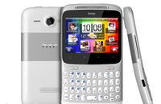
Esta es la propuesta QWERTY más reciente del fabricante taiwanés. Viene equipado con un procesador de 800 Mhz, 512 Mb de RAM, otros 512 Mb de capacidad interna (ampliable con tarjeta Micro SD), cámara de 5 Mpx con flash y trabaja con Android 2.3.3.
Un dato llamativo de este terminal, es la tecla “Facebook” en la parte inferior, la cual se ilumina cuando estemos navegando por contenido susceptible de ser compartido. Al pulsar una vez, nos mandará directos a nuestro muro o al de algún amigo para poder compartir contenidos, si mantenemos la tecla pulsada unos segundos, nos llevará directos a la sección “Places”, desde la que podemos compartir nuestra ubicación.
Un terminal muy completo, tanto por rendimiento, como por tener una cámara en condiciones y es ideal para los usuarios más enganchados a Facebook.
En cuanto al precio, podréis verlo rondando los 185 a 190 euros.
Samsung Galaxy Pro
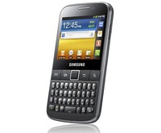
Obviamente, los de Samsung no se iban a quedar de brazos cruzados y dentro de su gama Galaxy, nos encontramos con los Pro. Concretamente, este es el Y, de “young” (joven, en inglés), creado para satisfacer las necesidades de los más jovenes o de aquellos que no necesiten tanta potencia.
A este Y Pro lo mueve un procesador de 832 Mhz junto a sus 512 Mb de RAM. El almacenamiento de serie es de 160 Mb y se puede ampliar (cómo no) con tarjetas Micro SD. Tiene una pantalla táctil de 2.6″, la cámara es de 3’2 Mpx y la versión de Android que utiliza es la 2.3.
Su precio está sobre los 199 euros.
Sabemos que hay algunos más, pero esto son los destacados, y posiblemente en navidades al calor del consumo lleguen nuevos o bajen precios y repitamos una edición más completa de este repaso a algunos de los más importantes android low cost del mercado.
Ahora la pelota está de vuestra campo, os toca decidir cual os conviene más, y recordad, no siempre hay terminal mejor, si no el más adecuado y el que más te guste :)
Seguramente también te interesará...
- Una tablet android barata, con teclado físico e innovadora: Binatone readMe
- Las “Blackberry” de Android: táctil y teclado QWERTY integrado
- Un Android de 4,3″ de pantalla y menos de 200€, se llama ZTE Skate
- Android low cost: Guía de terminales Android por 0€ y menos de 20€ al mes
- ZTE Light Pro: Otra tablet Android low cost
- Samsung Galaxy Ace en Movistar: precios y puntos
- Samsung Galaxy Pro llega por sorpresa a España junto al Corby II en Vodafone
- GeeksPhone Zero, todas sus características y precio. El Android lowcost Spanish
Ice Cream Sandwich en un HTC Dream y HTC Hero en un alarde de cabezonería
Thu, 24 Nov 2011 00:12:30 PST
La obstinación de algunas personas por llegar mas allá es asombrosa, y sirvan estas historias sólo para darse cuanta de esto, de que si se quiere, se puede, de que la comunidad de android son muchas personas, particulares, grupos de trabajo, foros, etc y todos con algún objetivo concreto, tantos como gustos, y algunos tan [...]
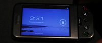
La obstinación de algunas personas por llegar mas allá es asombrosa, y sirvan estas historias sólo para darse cuanta de esto, de que si se quiere, se puede, de que la comunidad de android son muchas personas, particulares, grupos de trabajo, foros, etc y todos con algún objetivo concreto, tantos como gustos, y algunos tan extraños como estos, meter la versión 4.0 de Android en el primer android comercializado, que data de 2008, y en los tiempo que corren, es casi como decir que es del siglo pasado o en un HTC hero, de casi iguales condiciones de hardware.
Obviamente las versiones son Alpha, muy muy prematuras y lentas, con funciones capadas y demás problemas que le hacen moverse erráticamente, lento e inusable para el día a día, pero eso es hoy, mañana, quien sabe de mañana…. Es comprensible que no llegue a un nivel de fluidez como en un Nexus galaxy, pero si que se pueden hacer cosas. El mundo de las Roms y el desarrollo es casi infinito. Soñar, al fin y al cabo es gratis, y saber “que se puede” es suficiente alimento para muchos.
Hilo de desarrollo Android 4.0 en HTC Hero
Hilo de desarrollo Android 4.0 en HTC Dream
Seguramente también te interesará...
- La carrera por la primera ROM con Ice Cream Sandwich ha comenzado
- Las mejores ROMs para … HTC Magic/Dream (32B), Magic (32A) y Hero
- Más madera: HTC Eris o el hermano feo del Hero
- Confirmado lanzamiento de Android Donut 1.6 y Videoreviews
- Presentación de LG para estas Navidades
- Fotos panorámicas al estilo Ice Cream Sandwich con estas geniales aplicaciones
- Instala Android 3.2 Honeycomb en un netbook
- Google Music, la tienda de canciones, el sello discográfico y el futuro de la música
Controla la Música de tu Android con los botones físicos gracias a Tactile Player
Wed, 23 Nov 2011 11:15:38 PST
Una de las cosas que me encanta de la ROM CyanogenMod es la posibilidad de pasar las canciones de mi Samsung Galaxy S con los botones de volumen. Mantengo pulsado el boton de volumen arriba un segundo y pasa a la siguiente canción. Mantengo pulsado el boton de volumen abajo y retrocede a la canción [...]
Una de las cosas que me encanta de la ROM CyanogenMod es la posibilidad de pasar las canciones de mi Samsung Galaxy S con los botones de volumen. Mantengo pulsado el boton de volumen arriba un segundo y pasa a la siguiente canción. Mantengo pulsado el boton de volumen abajo y retrocede a la canción anterior.
Es de lo más práctico y comodo para pasar rapidamente de canción y en la mayoría de ocasiones no tendremos ni que sacar nuestro Android del bolsillo. Tactile Player hace precisamente eso, permitirnos controlar nuestra música con los botones físicos.
Tactile Player me encanta no voy a negarlo. Traslada a todos los Android una de las funciones más conseguidas y útiles de la ROM CyanogenMod, de la cual soy usuario desde hace más de un año y cada día me gusta más (a ver cuanto tardan en llegar las primeras versiones con Ice Cream Sandwich). El funcionamiento de Tactile Player es muy sencillo y a la vez comodo, incluso han añadido la opción para pausar/reanudar la reproducción de música, algo que aún no está implementado en la ROM CyanogenMod. Una vez descargada del Market y instalada podremos controlar la música de la siguiente forma:
- Doble pulsación en la tecla “Volumen Arriba” – Pasar a la siguiente canción.
- Doble pulsación en la tecla “Volumen Abajo” – Pasar a la canción anterior.
- Triple pulsación en el Botón “Home” – Pausar / Reanudar la reproducción (siendo esta función configurable).
Así de sencillo. Y lo mejor de todo es que no requiere ROOT y funciona en cualquier móvil Android con Eclair (2.1) en adelante. Y como no, funcionará en casi cualquier reproductor de música. Entre la lista de reproductores soportados están: El reproductor “stock” de Android, los reproductores de las ROM’s Samsung, LG, Motorola, HTC y como no los principales reproductores disponibles en el Android Market como Pandora, Mixzing, PowerAMP, doubleTwist, Winamp, PlayerPro entre otros.
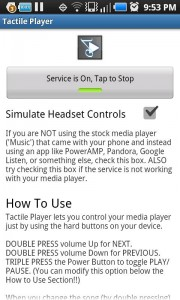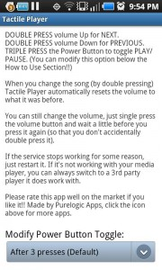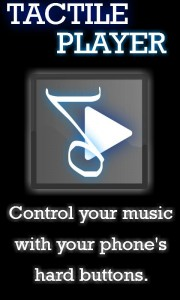
Así que sea cual sea vuestro móvil Android y sea cual sea vuestro reproductor favorito, Tactile Player or permitirá cambiar de canción con los botones físicos de vuestro Android. Tactile Player está disponible en el Android Market por tan solo 0,99€ y requiere de Android 2.1+ para funcionar.
Si no queréis haceros ROOT o probar una ROM cocinada, Tactile Player os permitirá controlar vuestra música de una forma que nunca hubieseis pensado que era posible.
Seguramente también te interesará...
- Sincroniza las notificaciones de tu Android en tu PC con Synchrolab
- Los mejores vídeos TimeLapse con tu Android y Lapse It
- SanDisk Memory, haz copias de seguridad de tu Android en la nube
- Fondos de pantalla en Android: Todo lo que necesitas saber
- Toma capturas de pantalla con tu Android sin ser Root
- Los mejores temas para Theme Chooser de CyanogenMod
- Controla tu Android con gestos
- Chainfire3D: Aumenta el rendimiento 3D de tu Android y disfruta de juegos de la Tegra Zone
Presentación de LG para estas Navidades
Wed, 23 Nov 2011 09:01:31 PST
El fabricante coreano LG, tiene previsto para el próximo día 1 de diciembre en la ciudad de Nueva York, un evento de presentación de un producto. Si nos tenemos que basar en la imagen, podría ser cualquiera de sus productos, desde una tostadora a una lavadora, pero no, mucho nos tememos que se trata de [...]

El fabricante coreano LG, tiene previsto para el próximo día 1 de diciembre en la ciudad de Nueva York, un evento de presentación de un producto.
Si nos tenemos que basar en la imagen, podría ser cualquiera de sus productos, desde una tostadora a una lavadora, pero no, mucho nos tememos que se trata de la presentación del rumoreado y esperado LG Nitro HD (cuyo nombre de serie es LG P930), un nuevo competidor en la categoría de los dual-core. 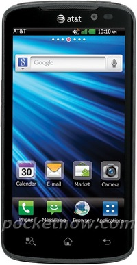En el Nitro HD, el procesador podría hacer llegar a sus dos núcleos a nada menos que a 1’5 Ghz, ayudado por 1 Gb de RAM y con una capacidad de almacenamiento de 4 Gb. En el apartado de la conectividad, ya empezamos a hablar de 4G LTE, Bluetooth 3.0 y soporte NFC. Utiliza una pantalla HD 720p de 4.5″ con tecnología IPS.
En lo que a las ópticas se refiere, la cámara trasera es de 8 Mpx y la delantera de 1’3 Mpx. Presumiblemente, podría disponer de salida HDMI y estar alimentado por una batería de 1830 mAh. En cuanto a la versión de Android que traerá, es muy probable que se trate de la 2.3, de ser así, la actualización a ICS, sería casi inmediata.
Seguramente también te interesará...
- Elige el mejor estilo para tu Android: Comparativa entre los 4 launchers de moda
- Ice Cream Sandwich en un HTC Dream y HTC Hero en un alarde de cabezonería
- Fotos panorámicas al estilo Ice Cream Sandwich con estas geniales aplicaciones
- Edita tus videos como si fuera en tu ordenador: AndroMedia Video Editor
- Los posibles fallos del FaceUnlock y por qué sigue siendo un buen sistema de bloqueo
- Instala Android 3.2 Honeycomb en un netbook
- Google Music, la tienda de canciones, el sello discográfico y el futuro de la música
- La carrera por la primera ROM con Ice Cream Sandwich ha comenzado
Android, los virus y el malware, ¿es necesario tenerle miedo?
Wed, 23 Nov 2011 02:23:27 PST
Hemos escrito a menudo sobre este tema, pero cada vez que hablamos con alguien que no sea un experto sobre el tema, o que sea un profano, directamente nos damos cuenta de que no hemos avanzado absolutamente nada. Es descorazonador ver como tienes que recabar mucha información de forma constante, para mantenerte alejado de un [...]
Hemos escrito a menudo sobre este tema, pero cada vez que hablamos con alguien que no sea un experto sobre el tema, o que sea un profano, directamente nos damos cuenta de que no hemos avanzado absolutamente nada. Es descorazonador ver como tienes que recabar mucha información de forma constante, para mantenerte alejado de un tema como este.
Algunos diréis que si siempre estamos con lo mismo, que si somos unos fanboys, que si estas cosas no pasan con otros teléfonos, que si aprovecho el comentario para vender un Opel Corsa en buen estado… Y algunos tendréis razón (porque me interesa ese Corsa) y otros estaréis confundidos, o al menos no tan acertados como pensabais.
Soy consciente de que el titular levantará ampollas, pero tras leer artículos como éste o éste, creo que un poco de perspectiva no nos vendrá mal, y que las cifras que da uno de ellos, de hecho pueden ayudarnos a entender este fenómeno mejor.
Para empezar, y antes de dar otros datos, os daré uno bastante significativo y, a mi modo de ver, el más importante de todos con diferencia. La mayoría de los estudios que indican que los virus están tan disparados en Android, proceden no de empresas especializadas en auditorías de seguridad, sino de las especializadas en la venta de antivirus. Es decir, es gente que está interesadísima en que esos estudios sean tan catastróficos como sea posible, pues eso es lo que les da dinero de verdad. Con esto no quiero decir que los datos no sean ciertos, pero sí que deben ser analizados con calma, pues les interesa bastante que estos datos sean malinterpretados en la medida de lo posible, orientando esa manipulación a producir miedo en la gente que tenga menos experiencia en estos aspectos.
-
La mayor parte del malware se encuentra en mercados alternativos y poco (o nada) de fiar. Aunque siempre cabe la posibilidad de que alguna aplicación malintencionada se cuele en el Market, lo habitual es que estas aplicaciones sean descargados de mercados alternativos (asiáticos en su mayor parte) o directamente de internet e instaladas a mano directamente. Por lo que la primera barrera, y la mejor para contener estos ataques es tener una mínima precaución. No instaléis de orígenes de los que no os fieis y revisad siempre los permisos de todo lo que instaléis y que el editor sea de confianza.
-
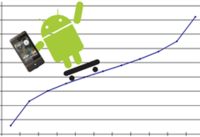Las estadísticas son engañosas. Leímos en numerosos sitios (que se apresuraron a publicarlo), que el malware en el Market había crecido un 472%, lo cual es una barbaridad pero, ¿es significante? Pues vamos a contar con calma (afortunadamente ya tenemos los números hechos gracias a los amigos de TalkAndroid. Se habían detectado 29 aplicaciones malintencionadas, por lo que ese incremento (suponiendo que nada hubiera desaparecido del Market en ese tiempo) supondría un total de 137, lo cual no es tan espectacular como lo anterior, pero también es cierto.
-
Las posibilidades de acabar instalando uno de estos virus, ¿son tan altas? Rotundamente NO. Suponiendo que no se hiciera nada para evitarlo (y se hace, pues nos consta que las aplicaciones malintencionadas van cayendo) tendríamos el numero anterior sobre las más de 370000 aplicaciones que actualmente contiene el Market, lo que supone, con instalaciones completamente aleatorias es inferior a 3 sobre 10000, o 1 sobre 3333. Es decir, en condiciones normales tendríamos que instalar 3333 aplicaciones para acabar instalando UN virus, sin contar con que filtráramos los permisos, ni con que no instalamos las aplicaciones al azar, sino buscando bajo criterios concretos, por lo que las posibilidades son extremadamente remotas.
-
Y en caso de acabar infectado, ¿qué podrían hacer estas aplicaciones con mi teléfono? Pues realmente poca cosa fuera de su ámbito de actuación. Es decir, si no están autorizadas a hacer llamadas (siempre podemos consultar los permisos) no las harán, si no están autorizadas a efectuar compras, no lo harán, y en caso de hacerlo nos pedirán confirmación, por lo que en realidad los daños serían bastante más limitados de lo que nos quieren hacer ver.
Y tras toda esta perorata, me gustaría añadir la reflexión que hacen en ese artículo de TalkAndroid sobre si merece la pena instalar este software: solamente en el caso de que el precio quede compensado por las posibilidades reales de pérdida dentro de nuestro teléfono.
Y vosotros, ¿qué opináis al respecto? ¿usáis antivirus? ¿conocéis a alguien que haya sufrido un ataque?
Seguramente también te interesará...
- ¿Es Android tan vulnerable ante Malware y virus como dicen?
- Cosas que no sabías de Android: Tener el GPS Activado no gasta batería y otras curiosidades
- Norton Apps y la verdad sobre los virus en Android
- Android y el malware, una relación infecciosa y que “vende” muy bien
- Calcula la peligrosidad de cada aplicación fácilmente con PermissionDog para Android
- Antivirus y aplicaciones de seguridad en Android, ¿un nuevo negocio o algo necesario?
- Norton para Android: Algo más que un antivirus
- Antivirus para Android, mantén seguro tu móvil